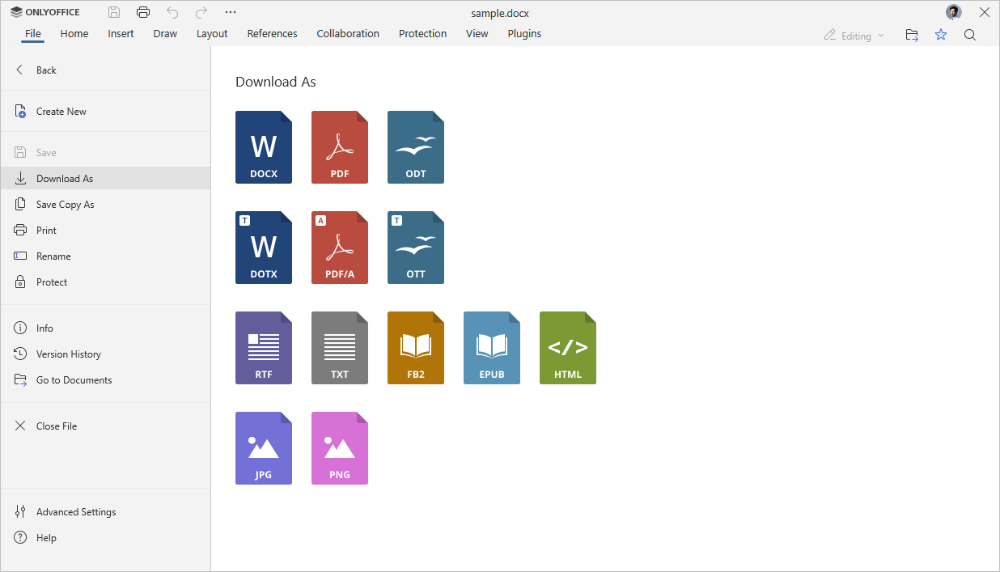
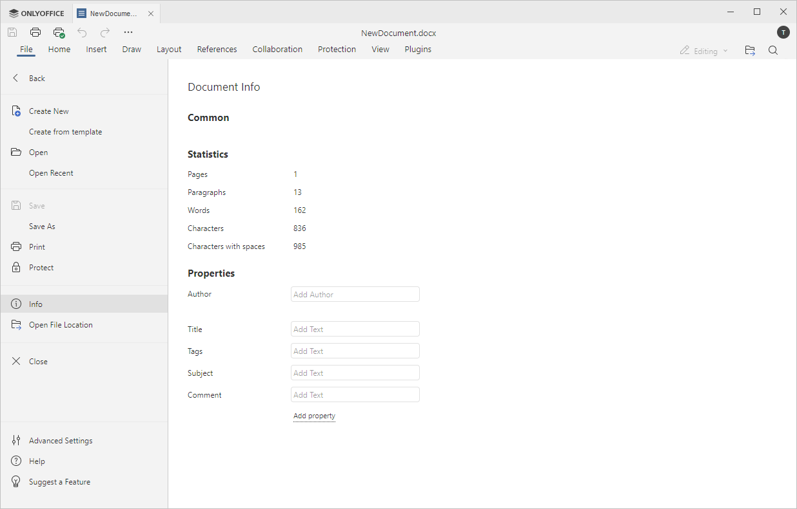

Kartica Fajl
Kartica Fajl u Uređivaču dokumenata omogućava izvođenje osnovnih operacija.
Odgovarajući prozor u Online Uređivaču dokumenata:

Odgovarajući prozor u Desktop Uređivaču dokumenata:

Pomoću ove kartice možete koristiti sledeće opcije:
- kreirati novi dokument ili otvoriti nedavno uređivan (dostupno samo u online verziji),
- u online verziji: sačuvati trenutni fajl (ukoliko je Automatsko čuvanje onemogućeno), sačuvati ga u željenom formatu na vašem računaru koristeći opciju Preuzmi kao, sačuvati kopiju fajla u odabranom formatu na portalu dokumenata koristeći opciju Sačuvaj kopiju kao, odštampati ili preimenovati trenutni fajl, u desktop verziji: sačuvati trenutni fajl bez promene formata ili lokacije koristeći opciju Sačuvaj, sačuvati ga promenom imena, lokacije ili formata koristeći opciju Sačuvaj kao ili odštampati trenutni fajl,
- zaštititi fajl pomoću lozinke, promeniti ili ukloniti lozinku,
- zaštititi fajl digitalnim potpisom (dostupno samo u desktop verziji),
- prikazati opšte informacije o dokumentu ili promeniti neka svojstva fajla,
- pratiti istoriju verzija (dostupno samo u online verziji),
- Idi na dokumente - u desktop verziji otvorite folder u kome je fajl smešten u prozoru File explorer, u online verziji otvorite folder modula Dokumenti gde je fajl smešten u novoj kartici pregledača,
- pristupiti Naprednim podešavanjima uređivača,
- Pomoć - otvoriti ugrađeni centar za pomoć.